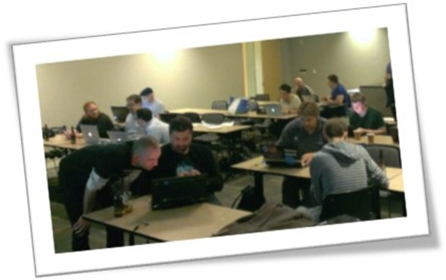

Community for F# Web Application
Work has begun on the web application to replace this static site. The site will be built with help from the community using Suave, WebSharper, and Freya. The teams behind those projects have graciously agreed to help and turn the new web app into a living example of what's possible with F# web technologies. If you would like to join in the fun, fork the project and send a pull request.
F# Web Applications GitBook
In addition to rebuilding the Community for F# web application in F#, we will be writing a GitBook chronicling the libraries used, how they were selected, etc. We hope this will provide greater insight into why F# provides a great platform for building web applications, as well as help you choose the right tool(s) for your own projects.
Community for F# has been organizing and recording F# talks since way before it was cool! Our Vimeo and YouTube channels have videos of presentations covering everything from Agents to Data Science, Domain-Specific Languages or writing a F# compiler to JavaScript. And much, much more! So check it out, and let us know what you like and don't like, and what (or who) you want to see recorded.
Broadcast a Presentation Online
Community for F# aims to give access to great learning resources to everyone in the Community, wherever they may be. If you run a Meetup group and have a great speaker coming in town, we will be happy to help you make that available online. And if you feel like giving a presentation online, let us know, we would love to have you on Community for F#!
A Dojo (道場 dōjō) is a Japanese term which literally means "place of the way"; it refers to a training place for students of Japanese martial arts, where they gather to conduct training, examinations and other related encounters.
By extension, a Coding Dojo is a meeting where a bunch of coders get together to work on a programming challenge. They are there to have fun and to engage in Deliberate Practice in order to improve their skills.

How to Organize a Coding Dojo?
There is no unique way to organize a Dojo. Every group or community is unique in its own way, and adapting the format is perfectly fine!
Make sure that attendees bring a laptop and are ready to code before the event starts. The best resource on setting up F# for various environments is the F# Software Foundation, where you can find instructions for Mac, Linux and Windows.
Process
Here is a rough outline of how a Dojo of about 1.5 hours could look like. Depending on the nature of the challenge, the level or size of the group, or whatever else, this should be adjusted - the goal is for people to learn and have fun!
- 10 mins: Explain the Dojo format, introduction the Challenge
- 5 mins: Break people into teams
- 1 hour: Code in teams [Check midway through how things are going]
- 15 mins before end: Ask teams to prepare to share their experience
- 15 mins: Each team shares their experience with the group
Tips and Tricks
There is no One True Way to organize a Dojo, but here are a few tips that can help make it even more successful!
- A Dojo is NOT a competition; it is a place to learn by coding together. As an organizer or a participant, it is your responsibility to make sure that the atmosphere remains non-competitive, collaborative, and fun. People should feel comfortable regardless of their skill level, and feel safe to try out new ideas.
- The "ideal" size for a Dojo is probably around 20 people; large enough to have different teams, with possibly different approaches to discuss - and small enough that teams can share and discuss their experience at the end of the Dojo. Smaller groups are perfectly fine; larger groups probably require adjustments, because logistics become time consuming. Specifically, in that case it may work better to let teams self-organize more, and sharing the team experience at the end should probably be more of a group discussion, rather than code show-and-tell for instance.
- Breaking people up in random teams is strongly recommended. It makes it easier for people to mix and get to know each other, usually creates teams with better skill distribution - and it is fun :) One simple way to do this is to count how many teams of 4 can be formed, and ask the whole group to count up. For instance, with a group of 12, people would count up 1, 2, 3, 1, 2, 3 etc... Once everyone has said a number, people with the same number form a team.
- Forming teams are better, but it's fine if people just want to work on their own! Encourage people to work in teams and get to know their team-mates, but let people know that if they are not comfortable with that, it's cool, too.
- Take the time to discuss at the end! It is a great way to learn from the other groups, and reflect on what went well or didn't go that great... Depending on the size of the group, it can go from simply asking each group to talk a bit about what they did and learnt, to short demos where each teams shows their code.
- Encourage people to work together, and to organize themselves accordingly: pair program on laptops, rearrange the furniture, anything that makes teams work better together is fair game!
Catalog of F# Coding Dojos
Our Dojos
- Digits Recognizer: build from scratch a machine learning engine that recognizes handwritten digits! This dojo is on the longer side (ideally 2+ hours), but is a great introduction to F#, with lots of guidance on syntax.
- Fractal Forest: a simple and fun Dojo - create beautiful fractal trees, and learn some recursion along the way. Good both for beginners and advanced F#ers!
- Canopy & 2048: learn how to use the F# web UI testing library Canopy, by building a bot that automatically plays the game. Good both for beginners and advanced F#ers!
- Markov Bot: build a small program to automatically generate human-looking text. Good both for beginners and advanced F#ers!
- Type Provider Treasure Hunt: use the awesomeness of F# Type Providers to access data from 7 different sources, and unlock a mystery!
- Classics mash-up: Picasquez vs. Velasso! Manipulate images and remix classic paintings - good for beginners and advanced F#ers.
- Ham or Spam: recognize which of the (real) text messages are Spam!
Classic Learning Problems
Here are a couple of classic resources to sharpen your F# skills.
If you know of other ones we have missed, please ping us on Twitter,
or send a pull request!